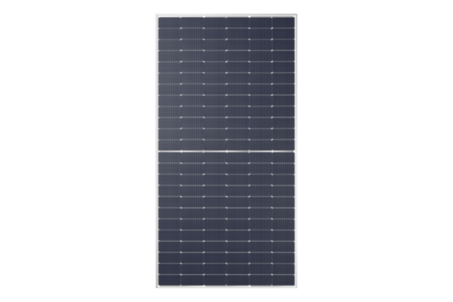

Serviços e Produtos
- Paineis Solares
Módulo Fotovoltaico Monocristalino Half-Cell 535 W Intelbras On-Grid
Excelente eficiência
- Nosso módulo tem eficiência de até 20,7%, garantindo melhor aproveitamento da radiação solar.
Tecnologia PERC e Half-Cell
- Tecnologia PERC e Half-Cell A tecnologia PERC, com 144 células HC, aumenta a potência de saída dos painéis apresentando menor perda por sombreamento.

Módulo Fotovoltaico Cast Mono Half-Cell 430 W Intelbras Off-Grid
Excelente eficiência
- Nosso módulo tem eficiência de até 20,54%, garantindo alto aproveitamento da radiação solar, além de possuir 9 BB.
Tecnologia PERC e half-cell
- A tecnologia PERC, aliada ao half-cell, aumenta a potência de saída dos painéis.
- Câmeras de Segurança
Câmera Dome HDCVI Lite 1 megapixel Intelbras
Alta definição de imagens
- A câmera possui resolução HD 720p, que proporciona imagens mais nítidas graças à tecnologia HDCVI
Multirecursos com o Menu OSD
- O menu OSD permite a configuração e os ajustes finos das imagens na tela em qualquer cenário de instalação. A sua grande sensibilidade possibilita exibir as cores por mais tempo e ajustar o modo de luz de fundo
Câmera Multi HD® Full Color Intelbras
Alta performance noturna
- A VHD 1220 FULL COLOR possui um sensor com alta sensibilidade, capaz de gerar imagens coloridas 24 horas em ambiente sem qualquer luminosidade
Multirrecursos com o Menu OSD¹
- Permite realizar a configuração e os ajustes finos das imagens em diferentes ambientes de instalação através do próprio DVR via cabo coaxial.
- Automatizadores
Automatizador de portões deslizantes
Protetor contra surto de tensão integrado
- Proteção contra sobretensão causados por raios e oscilações de energia, garantindo maior vida útil do produto.
Base e engrenagem externa em alumínio
- Produto resistente a oxidação, com a qualidade do alumínio em seu design. Mais elegância e resistência. Com o DR 400 AL, você tem maior comodidade, robustez e segurança na abertura e fechamento de portões de até 400kg.
Automatizador de portões basculante
Protetor de surto integrado na Central Eletrônica – CP 1000
- A alta durabilidade e a robustez da placa diminuem a probabilidade de sobretensão e garantem maior vida útil ao produto.
Fácil programação por LEDs, teclas e buzzer
- Garanta uma instalação e configuração mais rápida por meio de LEDs, teclas e buzzer.